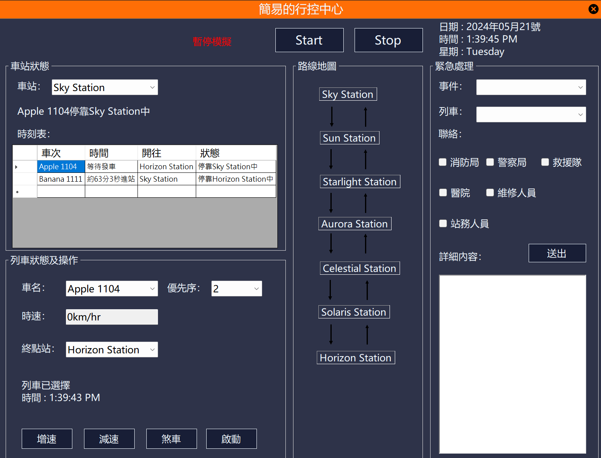

部分資訊使用「GitHub Copilot」
×

事前準備
作品展示的程式專案相比一般算相當進階，內容可能過於複雜。在開始之前，您應該熟悉非同步與多執行緒。如果你寫習慣主控台輸入輸出但還對此概念還不太熟悉，強烈建議你先了解概念。
指南
非同步程式設計通用概念
非同步操作是指不會阻止程式的執行的操作。在非同步程式設計中，您可以執行其他操作，而不必等待操作完成。 如果你在表單設計一個按鈕，然而，那個按鈕的程式有無窮迴圈的話，則其他按鍵都無法用，是因為大多數圖形用戶介面（GUI）應用程式使用單一執行緒來處理所有事件。
多執行緒概念
將耗時的操作放到另一個執行緒中，避免阻塞主執行緒。例如開啟資料庫的程式碼，如果無法開啟資料庫，雖然有處理異常(避免程序崩潰)，但還是會卡頓，所以放在另一個執行續能解決卡頓問題。
物件導向程式設計概念
一種程式設計模式，它將資料和程式碼封裝在物件中。物件是類的實例，類是定義物件的藍圖。
public class Person // 定義類 C#
{
// 定義屬性
public string Name { get; set; }
public int Age { get; set; }
// 定義方法
public void SayHello()
{
Console.WriteLine("Hello, my name is " + Name);
}
}演算法概念
解決問題的規則。演算法可以用來解決各種問題，例如搜尋、排序和刪除數據等。
資料庫概念
組織和存儲數據的系統。資料庫可以存儲結構化數據，例如表格和列，以及非結構化數據，例如文件和圖像等。
C# 概念
C# 是一種通用、物件導向的程式語言。它是由微軟開發的，用於開發各種應用程式，包括桌面應用程式、Web 應用程式和遊戲等。
旅行商問題
問題說明
旅行商問題（英語：Travelling salesman problem,TSP）是組合 最佳化中的一個NP困難問題,在作業研究和理論電腦科學中非常重要。 問題內容為「給定一系列城市和每對城市之間的距離,求解訪問每一座 城市一次並回到起始城市的最短迴路。」最直接的解法就是把所有可能 的路線都列出來,再比較哪一個路線是最短的。也就是以n個城市來說,會 有n!條路線,找出其中的最短路線就需要O(n!),即所謂階層時間(factorial time)。
目前還沒有快速的演算法可以解決出唯一且最佳解。為了降低時間複雜度， 本範例用退火蟻演算法，執行效率快了許多，但執行結果都不一定相同。
退火蟻演算法
//初始化
seq = new int[25];
seq_f = new int[25];
double tempterature = 10000;//當前溫度
double result = 1E9; //當前最短路徑長度
double new_energy = 1, old_energy = 0;
double[,] distance = new double[25, 25];
//建立圖
for (int i = 0; i < 25; i++)
{
for(int j = 0; j < 25; j++)
{
//自己到自己不考慮距離(為零)
distance[i, j] = i == j ? 0 : Data.GetDistance(dot[i], dot[j]);
}
}
//紀錄順序 0~24
Parallel.For(0, 25, i =>{
seq[i] = seq_f[i] = i;
});
//使用退火蟻演算法進行迭代，直到溫度足夠低或能量變化足夠小
while (tempterature > 1E-9 && Math.Abs(new_energy - old_energy) > 1E-9)
{
int iterate = 100;//設定迭帶次數
int[] seq_ff = new int[25];//存儲產生的序列
while (iterate-- >= 0 && Math.Abs(new_energy - old_energy) > 1E-9)
{
//生成新的序列
Data.generate1(ref seq_ff);
//計算新與舊各自的能量
new_energy = Data.count_energy(ref seq_ff);
old_energy = Data.count_energy(ref seq_f);
//Metroplis-Hastings 演算法 (Metropolis-Hastings algorithm)
//從複雜的概率分佈中抽取樣本
if (Data.metro(old_energy, new_energy, tempterature))
{
//如果接受，將新生成的序列複製到原序列
seq_f = seq_ff.ToArray();
}
}
new_energy = Data.count_energy(ref seq_f);
old_energy = result;
if (Data.metro(old_energy, new_energy, tempterature))
{
seq = seq_f.ToArray();
//降低溫度，以便更容易接受新的序列，但不會太快，以免陷入局部最小值
tempterature *= 0.998;
}
else
{
//稍微降低溫度
tempterature *= 0.999;
}
result = Data.count_energy(ref seq);
}簡易的行控中心
表單設計

主要功能
- 使用者可以自行操作列車
- 時刻掌握當前時間
- 使用模擬計算來預估列車的當前狀態
- 路線地圖可視化展示
- 緊急事件處理
- 用戶回饋功能
- 更多功能日後開發(維護和檢修計劃、能源管理連接資料庫)
功能介紹
1. 車站狀態
請選擇車站名稱，可以調整優先序。
時刻表包含將進站的列車名、預估抵達時間、起始站、終點站。
2. 列車狀態及操作
請選擇列車名稱，可以調整優先序、更改終點站，但先臨停。
- 列車出站加速度為 1.0 m/s²，維持且不超過 110km/h。
- 列車進站加速度為 -0.8 m/s²。
- 調整時速請按「增速」和「減速」分別和進出站加速度相同，增減速不超過 ±10km/h。
- 「煞車」煞車加速度為 -2.5 m/s² 用於急煞。
- 「啟動」不等候直接出站或中途停止要開始行駛。
- 「發車」等候發車。
- 「停靠站」在此站不發車，需要先停靠在車站。
- 車站優先序如果低於列車則不會臨停。
- 同方向列車不會在車站同時發車，考慮安全問題。
- 如果要進站的月台數不足則不會發車，需等待已在進站月台的列車離站。
- 一個月台有各一個北上和南下。
3. 路線地圖
點選車站名可直接更改列車站狀態的車站名。
箭頭顏色說明：
- 黑色箭頭：無列車在此行駛。
- 橘色箭頭：有列車要進站或離站。
- 藍色箭頭：有列車正在此行駛。
- 紅色箭頭：存在安全問題。
4. 事件處理
選擇事件及列車，勾選聯絡單位，詳細內容可為空。
模擬事件回報功能。